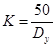

СТРОИТЕЛЬНЫЕ НОРМЫ И ПРАВИЛА
СИСТЕМЫ
АВТОМАТИЗАЦИИ
СНиП 3.05.07-85
ГОСУДАРСТВЕННЫЙ КОМИТЕТ СССР
ПО ДЕЛАМ СТРОИТЕЛЬСТВА
МОСКВА 1988
РАЗРАБОТАНЫ ГПИ Проектмонтажавтоматика Минмонтажспецстроя СССР (М. Л. Витебский - руководитель темы, В. Ф. Валетов, Р. С. Виноградова, Я. В. Григорьев, А. Я. Миндер, Н. Н. Пронин).
ВНЕСЕНЫ Минмонтажспецстроем СССР.
ПОДГОТОВЛЕНЫ К УТВЕРЖДЕНИЮ Главтехнормированием Госстроя СССР (Б. А. Соколов).
С введением в действие СНиП 3.05.07-85 «Системы автоматизации» утрачивают силу СНиП III-34-74 «Система автоматизации».
СОГЛАСОВАНЫ с Минздравом СССР (письмо от 24 декабря 1984 г. № 122-12/1684-4), Госгортехнадзором СССР (письмо от 6 февраля 1985 г. № 14-16/88).
С изменением утвержденным постановлением Госстроя СССР от 25 октября 1990 г. № 93 разработанным ГПКИ Проектмонтажавтоматика Минмонтажспецстроя СССР, измененные пункты отмечены *.
|
Государственный |
Строительные нормы |
СНиП 3.05.07-85 |
|
Системы автоматизации |
Взамен |
Настоящие нормы и правила распространяются на производство и приемку работ по монтажу и наладке систем автоматизации (контроля, управления и автоматического регулирования) технологических процессов и инженерного оборудования на строительстве новых, расширении, реконструкции и техническом перевооружении действующих предприятий, зданий и сооружений отраслей народного хозяйства.
Настоящие правила не распространяются на монтаж: систем автоматизации специальных объектов (атомные установки, шахты, предприятия по производству и хранению взрывчатых веществ, изотопов); систем СЦБ железнодорожного транспорта; систем связи и сигнализации; автоматики систем пожаротушения и дымоудаления; приборов с использованием радиоизотопных методов измерения; приборов и средств автоматизации, встроенных в станки, машины и другое оборудование, поставляемое предприятиями-изготовителями.
Правила устанавливают требования к организации, производству и приемке работ по монтажу приборов, средств автоматизации, щитов, пультов, агрегатных и вычислительных комплексов автоматизированных систем управления технологическими процессами (АСУ ТП), электрических и трубных проводок и т.п., а также к наладке смонтированных систем автоматизации.
Правила должны соблюдаться всеми организациями и предприятиями, участвующими в проектировании, монтаже и наладке систем автоматизации.
1.1. При производстве работ по монтажу и наладке систем автоматизации должны соблюдаться требования настоящих правил, СНиП 3.01.01-85, СНиП III-3-81, СНиП III-4-80 и ведомственных нормативных документов, утвержденных в порядке, установленном СНиП 1.01.01-82*.
|
Внесены |
Утверждены |
Срок |
1.2. Работы по монтажу систем автоматизации должны производиться в соответствии с утвержденной проектно-сметной документацией, проектом производства работ (ППР), а также с технической документацией предприятий-изготовителей.
1.3. Монтаж приборов и средств автоматизации при узловом методе строительства и комплектно-блочном методе монтажа технологического оборудования и трубопроводов, проводимого в соответствии со СНиП 3.05.05-84, должен осуществляться в процессе укрупнительной сборки технологических линий, узлов и блоков.
1.4. Генподрядчик должен привлекать организацию, осуществляющую монтаж систем автоматизации, к рассмотрению проекта организации строительства (ПОС) в части выполнения монтажных работ комплектно-блочным и узловым методами, компоновки специальных помещений, предназначенных для систем автоматизации (диспетчерских, операторских, аппаратных залов, помещений датчиков и т. п.), опережающих сроков их сооружения и передачи под монтаж.
1.5.* При монтаже и наладке систем автоматизации следует оформлять документацию в соответствии с обязательным приложением 1 настоящих правил.
1.6.* Окончанием работ по монтажу систем автоматизации является завершение индивидуальных испытаний, выполняемых в соответствии с разд. 4 настоящих правил, и подписание акта приемки смонтированных систем автоматизации в объеме рабочей документации.
2.1. Монтажу систем автоматизации должна предшествовать подготовка в соответствии со СНиП 3.01.01-85 и настоящими правилами.
2.2. В составе общей организационно-технической подготовки должны быть определены заказчиком и согласованы с генподрядчиком и монтажной организацией:
а) условия комплектования объекта приборами, средствами автоматизации, изделиями и материалами поставки заказчика, предусматривающие поставку их на технологический блок. узел, линию;
б) перечень приборов, средств автоматизации, агрегатных и вычислительных комплексов АСУ ТП, монтируемых с привлечением шефмонтажного персонала предприятий-изготовителей;
в) условия транспортирования блоков щитов, пультов, групповых установок приборов, трубных блоков к месту монтажа.
2.3. При подготовке монтажной организации к производству работ должны быть:
а) получена рабочая документация;
б) разработан и утвержден проект производства работ;
в) произведена приемка строительной и технологической готовности объекта к монтажу систем автоматизации;
г) произведена приемка оборудования (приборов, средств автоматизации, щитов, пультов, агрегатных и вычислительных комплексов АСУ ТП), изделий и материалов от заказчика и генподрядчика;
д) произведена укрупнительная сборка узлов и блоков;
е) выполнены предусмотренные нормами и правилами мероприятия по охране труда и противопожарной безопасности.
2.4. До начала монтажа систем автоматизации монтажной организацией совместно с генподрядчиком и заказчиком должны быть решены следующие вопросы:
а) установлены опережающие сроки строительства специальных помещений, предназначенных для систем автоматизации, обеспечивающие своевременное проведение индивидуальных испытаний вводимых в действие технологических линий, узлов и блоков;
б) определены технологические линии, узлы, блоки и сроки их передачи под индивидуальные испытания после выполнения монтажа систем автоматизации;
в) предусмотрены необходимые производственные мастерские, бытовые и конторские помещения, оборудованные отоплением, освещением и телефоном;
г) предусмотрено использование основных строительных машин, находящихся в распоряжении генподрядчика (транспортных средств, подъемно-разгрузочных машин и механизмов и т. п.) для перемещения крупногабаритных узлов (блоков щитов, пультов, труб и т. п.) от производственных баз монтажных организаций до установки их в проектное положение на строительной площадке;
д) разработаны рекомендации и схемы подъема крупногабаритных узлов на проектные отметки и их перемещение через монтажные проемы;
е) предусмотрены постоянные или временные сети, подводящие к объектам электроэнергию, воду, сжатый воздух, с устройствами для подключения оборудования и инструмента;
ж) предусмотрены в соответствии с проектом (рабочим проектом) мероприятия, обеспечивающие защиту приборов и средств автоматизации, щитов, пультов, трубных и электрических проводок от влияния атмосферных осадков, грунтовых вод и низких температур, от загрязнений и повреждений, а средств вычислительной техники - и от статического электричества.
2.5.* В рабочей документации систем автоматизации, принимаемой к производству работ, монтажная организация должна проверить следующее:
а) взаимоувязки с технологической, электротехнической, сантехнической и другой рабочей документацией;
б) привязки в рабочих чертежах приборов и средств автоматизации, поставляемых предприятиями-изготовителями комплектно с технологическим оборудованием;
в) учет требований высокой заводской и монтажной готовности оборудования, передовых методов монтажных работ, максимального переноса трудоемких работ в монтажно-заготовительные мастерские;
г) указания категорий трубных проводок в соответствии с рекомендуемым приложением 2;
д) наличие взрывоопасных или пожароопасных зон и их границы, категории, группы и наименования взрывоопасных смесей; места установки разделительных уплотнений и их типы;
е) наличие документации на выполнение работ по монтажу и испытанию трубных проводок на давление свыше 10 МПа (100 кгс/см2).
2.6. Приемку строительной и технологической готовности к монтажу систем автоматизации следует осуществлять поэтапно по отдельным законченным частям объекта (диспетчерские, операторские помещения, технологические блоки, узлы, линии и т. п.).
2.7. Поставка на объект изделий и материалов организацией, монтирующей системы автоматизации, должна осуществляться, как правило, с помощью контейнеров.
2.8. До начала монтажа систем автоматизации на строительной площадке, а также в зданиях и помещениях, сдаваемых под монтаж систем автоматизации, должны быть выполнены строительные работы, предусмотренные рабочей документацией и проектом производства работ.
В строительных конструкциях зданий и сооружений (полах, перекрытиях, стенах, фундаментах оборудования) в соответствии с архитектурно-строительными чертежами должны быть:
нанесены разбивочные оси и рабочие высотные отметки:
установлены закладные конструкции (см. рекомендуемое приложение 3) под щиты, пульты, приборы, средства автоматизации и т. п.;
выполнены каналы, туннели, ниши, борозды, закладные трубы для скрытой проводки, проемы для прохода трубных и электрических проводок с установкой в них коробов, гильз, патрубков, обрамлений и других закладных конструкций;
установлены площадки для обслуживания приборов и средств автоматизации;
оставлены монтажные проемы для перемещения крупногабаритных узлов и блоков.
2.9. В специальных помещениях, предназначенных для систем автоматизации (см. п. 1.4), а также в производственных помещениях в местах, предназначенных для монтажа приборов и средств автоматизации, должны быть закончены строительные и отделочные работы, произведена разборка опалубок, строительных лесов и подмостей, не требующихся для монтажа систем автоматизации, а также убран мусор.
2.10. Специальные помещения, предназначенные для систем автоматизации (см. п. 1.4), должны быть оборудованы отоплением, вентиляцией, освещением, при необходимости кондиционированием, смонтированными по постоянной схеме, иметь остекление и дверные запоры. В помещениях должна поддерживаться температура не ниже 5 °С.
После сдачи указанных помещений под монтаж систем автоматизации в них не допускается производство строительных работ и монтаж санитарно-технических систем.
2.11. В помещениях, предназначенных для монтажа технических средств агрегатных и вычислительных комплексов АСУ ТП в дополнение к требованиям пп. 2.9; 2.10, должны быть смонтированы системы кондиционирования воздуха и тщательно убрана пыль. Окраска помещений меловой побелкой запрещается. На окнах должны быть предусмотрены средства защиты от прямых солнечных лучей (жалюзи, шторы).
2.12. К началу монтажа систем автоматизации на технологическом, санитарно-техническом и других видах оборудования, на трубопроводах должны быть установлены:
закладные и защитные конструкции для монтажа первичных приборов. Закладные конструкции для установки отборных устройств давления, расхода и уровня должны заканчиваться запорной арматурой;
приборы и средства автоматизаций, встраиваемые в трубопроводы, воздуховоды и аппараты (сужающие устройства, объемные и скоростные счетчики, ротаметры, проточные датчики расходомеров и концентратомеров, уровнемеры всех типов, регулирующие органы и т. п.).
2.13. На объекте в соответствии с технологическими, сантехническими, электротехническими и другими рабочими чертежами должны быть:
проложены магистральные трубопроводы и разводящие сети с установкой арматуры для отбора теплоносителей к обогреваемым устройствам систем автоматизации, а также проложены трубопроводы для отвода теплоносителей;
установлено оборудование и проложены магистральные и разводящие сети для обеспечения приборов и средств автоматизации электроэнергией и энергоносителями (сжатым воздухом, газом, маслом, паром, водой и т. п.), а также проложены трубопроводы для отвода энергоносителей;
проложена канализационная сеть для сбора стоков от дренажных трубных проводок систем автоматизации;
выполнена заземляющая сеть;
выполнены работы по монтажу систем автоматического пожаротушения.
2.14. Заземляющая сеть для технических средств агрегатных и вычислительных комплексов АСУ ТП должна отвечать требованиям предприятий - изготовителей этих технических средств.
2.15. Приемка объекта оформляется актом готовности объекта к производству работ по монтажу систем автоматизации согласно обязательному приложению 1.
2.16. Передача в монтаж оборудования, изделий, материалов и технической документации осуществляется в соответствии с требованиями «Правил о договорах подряда на капитальное строительство», утвержденных Советом Министров СССР и «Положения о взаимоотношениях организаций - генеральных подрядчиков с субподрядными организациями», утвержденного Госстроем СССР и Госпланом СССР.
2.17.* Принимаемые оборудование, материалы и изделия должны соответствовать рабочей документации, государственным стандартам, техническим условиям и иметь соответствующие сертификаты, технические паспорта или другие документы, удостоверяющие их качество. Трубы, арматура и соединения для кислородных трубных проводок должны быть обезжирены, что должно быть указано в документации, подтверждающей проведение этой операции.
При приемке оборудования, материалов и изделий проверяются комплектность, отсутствие повреждений и дефектов, сохранность окраски и специальных покрытий, сохранность пломб, наличие специального инструмента и приспособлений, поставляемых предприятиями-изготовителями.
Детали трубных проводок на давление свыше 10 МПа (100 кгс/см2) передаются в монтаж в виде подготовленных к монтажу изделий (трубы, фасонные части к ним, соединительные детали, метизы, арматура и т. п.) или собранными в сборочные единицы, укомплектованными по спецификации деталировочных чертежей. Отверстия труб должны быть закрыты пробками. На изделия и сборочные единицы, имеющие сварные швы, должны передаваться акты или другие документы, подтверждающие качество сварных соединений в соответствии со СНиП 3.05.05-84.
Устранение дефектов оборудования, обнаруженных в процессе приемки, осуществляется в соответствии с «Правилами о договорах подряда на капитальное строительство».
3.1. Монтаж систем автоматизации должен производиться в соответствии с рабочей документацией с учетом требований предприятий-изготовителей приборов, средств автоматизации, агрегатных и вычислительных комплексов, предусмотренных техническими условиями или инструкциями по эксплуатации этого оборудования.
Работы по монтажу следует выполнять индустриальным методом с использованием средств малой механизации, механизированного и электрифицированного инструмента и приспособлений, сокращающих применение ручного труда.
3.2. Работы по монтажу систем автоматизации должны осуществляться в две стадии (этапа):
На первой стадии следует выполнять: заготовку монтажных конструкций, узлов и блоков, элементов электропроводок и их укрупнительную сборку вне зоны монтажа; проверку наличия закладных конструкций, проемов, отверстий в строительных конструкциях и элементах зданий, закладных конструкций и отборных устройств на технологическом оборудовании и трубопроводах, наличия заземляющей сети; закладку в сооружаемые фундаменты, стены, полы и перекрытия труб и глухих коробов для скрытых проводок; разметку трасс и установку опорных и несущих конструкций для электрических и трубных проводок, исполнительных механизмов, приборов.
На второй стадии необходимо выполнять: прокладку трубных и электрических проводок по установленным конструкциям, установку щитов, стативов, пультов, приборов и средств автоматизации, подключение к ним трубных и электрических проводок, индивидуальные испытания.
3.3. Смонтированные приборы и средства автоматизации электрической ветви Государственной системы приборов (ГСП), щиты и пульты, конструкции, электрические и трубные проводки, подлежащие заземлению согласно рабочей документации, должны быть присоединены к контуру заземления. При наличии требований предприятий-изготовителей средства агрегатных и вычислительных комплексов должны быть присоединены к контуру специального заземления.
3.4. Разметку мест установки конструкций для приборов и средств автоматизации следует выполнять в соответствии с рабочей документацией.
При разметке должны учитываться следующие требования:
при установке конструкций не должны быть нарушены скрытые проводки, прочность и огнестойкость строительных конструкций (оснований);
должна быть исключена возможность механического повреждения смонтированных приборов и средств автоматизации.
3.5. Расстояние между опорными конструкциями на горизонтальных и вертикальных участках трассы для прокладки трубных и электрических проводок, а также пневматических кабелей должно приниматься по рабочей документации.
3.6. Опорные конструкции должны быть параллельны между собой, а также параллельны или перпендикулярны (в зависимости от вида конструкций) строительным конструкциям (основаниям).
3.7. Конструкции для приборов, устанавливаемых на стене, должны быть перпендикулярны стенам. Стойки, устанавливаемые на полу, должны быть выверены по отвесу или уровню. При установке рядом двух или более стоек они должны быть скреплены между собой разъемными соединениями.
3.8. Монтаж коробов и лотков должен выполняться укрупненными блоками, собранными в монтажно-заготовительных мастерских.
3.9. Крепление коробов и лотков к опорным конструкциям и соединение их между собой должно быть болтовое или на сварке.
При болтовом соединении должна быть обеспечена плотность соединения коробов и лотков между собой и с опорными конструкциями, а также обеспечена надежность электрического контакта.
При соединении сваркой не допускается прожог коробов и лотков.
3.10. Расположение коробов после их установки должно исключить возможность скопления в них влаги.
3.11. В местах пересечения осадочных и температурных швов зданий и сооружений, а также на наружных установках короба и лотки должны иметь компенсирующие устройства.
3.12. Все конструкции должны быть окрашены согласно указаниям, приведенным в рабочей документации.
3.13. Проходы трубных и электрических проводок через стены (наружные или внутренние) и перекрытия должны выполняться в соответствии с рабочей документацией.
3.14. Настоящие правила распространяются на монтаж и испытание трубных проводок систем автоматизации (импульсных, командных, питающих, обогревающих, охлаждающих, вспомогательных и дренажных согласно рекомендуемому приложению 3), работающих при абсолютном давлении от 0,001 МПа (0,01 кгс/см2) до 100 МПа (1000 кгс/см2).
Правила не распространяются на монтаж трубных проводок внутри щитов и пультов.
3.15. Монтаж и испытание трубных проводок систем автоматизации должны отвечать требованиям СНиП 3.05.05-84 и настоящего СНиП.
3.16. Применяемые при монтаже трубных проводок оборудование, приспособления, оснастка, методы производства работ должны обеспечивать возможность монтажа следующих труб и пневматических кабелей:
стальных водогазопроводных по ГОСТ 3262-75 обыкновенных и легких с условным проходом 8; 15; 20; 25; 40 и 50 мм;
стальных бесшовных холоднодеформированных по ГОСТ 8734-75 наружным диаметром 8; 10; 14; 16 и 22 мм с толщиной стенки не менее 1 мм;
бесшовных холодно- и теплодеформированных из коррозионно-стойкой стали по ГОСТ 9941-81 наружным диаметром 6; 8; 10; 14; 16 и 22 мм с толщиной стенки не менее 1 мм. Для трубных проводок давлением свыше 10 МПа (100 кгс/см2) могут применяться трубы наружным диаметром 15; 25 и 35 мм;
медных по ГОСТ 617-72 наружным диаметром 6 и 8 мм с толщиной стенки не менее 1 мм;
из алюминия и алюминиевых сплавов по ГОСТ 18475-82 наружным диаметром 6 и 8 мм с толщиной стенки не менее 1 мм;
из полиэтилена низкой плотности (высокого давления) по техническим условиям предприятий-изготовителей наружным диаметром 6 мм с толщиной стенки 1 мм и наружным диаметром 8 мм с толщиной стенки 1 и 1,6 мм;
напорных из полиэтилена по ГОСТ 18599-83 тяжелых наружным диаметром 12; 20 и 25 мм;
поливинилхлоридных гибких по техническим условиям предприятий-изготовителей внутренним диаметром 4 и 6 мм с толщиной стенки не менее 1 мм;
резиновых по ГОСТ 5496-78 внутренним диаметром 8 мм с толщиной стенки 1,25 мм;
пневматических и пневмоэлектрических с полиэтиленовыми трубками (пневмокабели) по техническим условиям предприятий-изготовителей (полиэтиленовые трубки должны иметь размеры 6´1; 8´1 и 8´1,6 мм).
Выбор конкретного сортамента труб в зависимости от свойств транспортируемой среды, величины измеряемых параметров, видов передаваемых сигналов и расстояний между соединяемыми приборами должен осуществляться в соответствии с рабочей документацией.
3.17. Трубные проводки должны прокладываться по кратчайшим расстояниям между соединяемыми приборами, параллельно стенам, перекрытиям и колоннам возможно дальше от технологических агрегатов и электрооборудования, с минимальным количеством поворотов и пересечений, в местах, доступных для монтажа и обслуживания, не имеющих резких колебаний температуры окружающего воздуха, не подверженных сильному нагреванию или охлаждению, сотрясению и вибрации.
3.18. Трубные проводки всех назначений следует прокладывать на расстоянии, обеспечивающем удобство монтажа и эксплуатации.
В пыльных помещениях трубные проводки должны быть проложены в один слой на расстояниях от стен и перекрытий, допускающих производить механическую очистку пыли.
3.19. Общая ширина группы горизонтальных и вертикальных трубных проводок, закрепляемых на одной конструкции, должна быть не более 600 мм при обслуживании проводки с одной стороны и 1200 мм - с двух сторон.
3.20. Все трубные проводки, заполняемые средой с температурой свыше 60 °С, проложенные на высоте менее 2,5 м от пола, должны быть ограждены.
3.21. Трубные проводки, за исключением заполняемых сухим газом или воздухом, должны прокладываться с уклоном, обеспечивающим сток конденсата и отвод газа (воздуха), и иметь устройства для их удаления.
Направление и величина уклонов должны соответствовать указанным в рабочей документации, а при отсутствии таких указаний проводки должны прокладываться со следующими минимальными уклонами: импульсные (см. рекомендуемое приложение 3) к манометрам для всех статических давлений, мембранным или трубным тягонапоромерам, газоанализаторам - 1:50; импульсные к расходомерам пара, жидкости, воздуха и газа, регуляторам уровня, сливные самотечные маслопроводы гидравлических струйных регуляторов и дренажные линии (см. рекомендуемое приложение 3) - 1:10.
Уклоны обогревающих (см. рекомендуемое приложение 3) трубных проводок должны соответствовать требованиям к системам отопления. Трубные проводки, требующие различных уклонов, закрепляемые на общих конструкциях, следует прокладывать по наибольшему уклону.
3.22. В рабочей документации должны быть предусмотрены меры, обеспечивающие компенсацию тепловых удлинений трубных проводок. Для случаев, когда рабочей документацией предусмотрена самокомпенсация температурных удлинений трубных проводок на поворотах и изгибах, в ней должно быть указано, на каких расстояниях от поворота (изгиба) следует закреплять трубы.
3.23. Металлические трубные проводки в местах перехода через температурные швы зданий должны иметь П-образные компенсаторы. Места установки компенсаторов и их число должны быть указаны в рабочей документации.
3.24. На трубных проводках, прокладываемых с уклоном, П-образные компенсаторы, ,,утки" и аналогичные устройства следует располагать так, чтобы они являлось наивысшей или наинизшей точкой трубной проводки и исключалась возможность накопления в них воздуха (газа) или конденсата.
3.25. Минимальная высота прокладки наружных трубных проводок должна быть (в свету): в непроезжей части территории, в местах прохода людей - 2,2 м; в местах пересечений с автодорогами - 5 м.
3.26. Монтаж трубных проводок должен обеспечивать: прочность и плотность проводок, соединений труб между собой и присоединений их к арматуре, приборам и средствам автоматизации; надежность закрепления труб на конструкциях.
3.27. Закрепление трубных проводок на опорных и несущих конструкциях должно производиться нормализованными крепежными деталями; крепление трубных проводок приваркой запрещается. Закрепление должно быть выполнено без нарушения целостности труб.
3.28. Не разрешается закрепление трубных проводок на внешней стороне щитов, корпусах приборов и средств автоматизации.
Допускается закрепление трубных проводок на разбираемом технологическом оборудовании у отборных устройств, но не более чем в двух точках.
Закрепление трубных проводок на неразбираемом технологическом оборудовании допускается по согласованию с заказчиком. Трубные проводки в местах подхода к оборудованию должны иметь разъемные соединения.
3.29. Трубные проводки должны быть закреплены:
на расстояниях не более 200 мм от ответвительных частей (с каждой стороны);
по обе стороны поворотов (изгибов труб) на расстояниях, обеспечивающих самокомпенсацию тепловых удлинений трубных проводок;
по обе стороны арматуры отстойных и прочих сосудов, если арматура и сосуды не закреплены; при длине соединительной линии с какой-либо стороны сосуда менее 250 мм крепление трубы к несущей конструкции не производится;
по обе стороны П-образных компенсаторов на расстояниях 250 мм от их изгиба при установке компенсаторов в местах перехода трубных проводок через температурные швы в стенах.
3.30. Изменение направления трубных проводок, как правило, должно выполняться соответствующим изгибом труб. Допускается для изменения направления трассы труб применять стандартизированные или нормализованные гнутые элементы.
3.31. Способы гнутья труб выбираются монтажной организацией.
Изогнутые трубы должны отвечать следующим основным требованиям:
а) на изогнутой части труб не должно быть складок, трещин, смятий и т. п.;
б) овальность сечения труб в местах изгиба допускается не более 10 %.
3.32. Минимальный радиус внутренней кривой изгиба труб должен быть:
для полиэтиленовых труб, изгибаемых в холодном состоянии:
ПНП - не менее 6Dн, где Dн - наружный диаметр; ПВП - не менее 10Dн;
для полиэтиленовых труб, изгибаемых в горячем состоянии, - не менее 3Dн;
для поливинилхлоридных пластифицированных труб (гибких), изгибаемых в холодном состоянии, - не менее 3Dн;
для пневмокабелей - не менее 10Dн.
для стальных труб, изгибаемых в холодном состоянии, - не менее 4Dн, а изгибаемых в горячем состоянии, - не менее 3Dн;
для отожженных медных труб, изгибаемых в холодном состоянии, - не менее 2Dн;
для отожженных труб из алюминия и алюминиевых сплавов при изгибании их в холодном состоянии - не менее 3Dн.
3.33. Соединение труб при монтаже разрешается осуществлять как неразъемными, так и разъемными соединениями. При соединении трубных проводок запрещается устранение зазоров и несоосности труб путем нагрева, натяжения или подгибания труб.
3.34. Присоединение трубных проводок к закладным конструкциям (см. рекомендуемое приложение 3) технологического оборудования и трубопроводов, ко всем приборам, средствам автоматизации, щитам и пультам должно осуществляться разъемными соединениями.
3.35. Для разъемных соединений и присоединений трубных проводок должны применяться нормализованные резьбовые соединения. При этом для труб из нержавеющей стали, алюминия и алюминиевых сплавов должны применяться соединительные части, специально предназначенные для этих труб.
3.36. Запрещается располагать соединения труб любого типа: на компенсаторах; на изогнутых участках; в местах крепления на опорных и несущих конструкциях; в проходах через стены и перекрытия зданий и сооружений; в местах, недоступных для обслуживания при эксплуатации.
3.37. Соединения труб следует располагать на расстояниях не менее 200 мм от мест крепления.
3.38. При соединениях труб в групповых трубных проводках соединения должны располагаться со сдвигом для обеспечения возможности работы инструментом при монтаже или демонтаже трубных проводок.
При групповых прокладках блоками расстояния между разъемными соединениями должны быть указаны в рабочей документации с учетом технологии блочного монтажа.
3.39. Резиновые трубы или трубы из иного эластичного материала, соединяющие трубные проводки с приборами и средствами автоматизации, должны быть надеты на всю длину присоединительных наконечников; трубы должны быть проложены без перегибов, свободно.
3.40. Арматура (вентили, краны, редукторы и т. п.), устанавливаемая на трубных проводках из медных, алюминиевых и пластмассовых труб, должна быть жестко укреплена на конструкциях.
3.41. Все трубные проводки должны быть замаркированы. Маркировочные знаки, наносимые на бирки, должны соответствовать маркировке трубных проводок, приведенной в рабочей документации.
3.42. Нанесение защитных покрытий должно производиться по хорошо очищенной и обезжиренной поверхности труб. Цвет окраски трубных проводок должен быть указан рабочей документацией.
Стальные трубы, предназначенные для защиты трубных проводок, должны быть окрашены снаружи. Пластмассовые трубы окраске не подлежат. Трубы из цветных металлов окрашиваются только в случаях, оговоренных в рабочей документации.
3.43. При монтаже пластмассовых труб и пневмокабелей необходимо применять минимальное количество соединений, максимально используя строительную длину труб и пневмокабеля.
3.44. Пластмассовые трубы и пневмокабели следует прокладывать по несгораемым конструкциям и укладывать по ним свободно, без натяжения, с учетом изменения длины от перепада температур.
В местах соприкосновения с острыми кромками металлических конструкций и крепежных деталей небронированные кабели и пластмассовые трубы необходимо защищать прокладками (резина, поливинилхлорид), выступающими на 5 мм по обе стороны от кромок опор и крепежных скоб.
Детали крепления необходимо устанавливать так, чтобы не деформировать сечение пластмассовых труб и пневмокабелей.
3.45. Компенсация температурных изменений длины пластмассовых трубных проводок должна быть обеспечена за счет рациональной расстановки подвижных (свободных) и неподвижных (жестких) креплений и изогнутых элементов самой трубной проводки (отводы, утки, прокладка «змейкой»).
3.46. Расстановку неподвижных креплений, не допускающих перемещение проводок в осевом направлении, следует производить так, чтобы разделить трассу на участки, температурная деформация которых происходит независимо одна от другой и самокомпенсируется.
Неподвижными должны быть крепления у соединительных коробок, шкафов, щитов и т.п., а также в середине участков между двумя поворотами.
Во всех остальных случаях, где допускается перемещение труб и пневмокабелей в осевом направлении, следует применять подвижные крепления.
3.47. Крепление пластмассовых труб и пневмокабелей на поворотах не допускается.
Вершина поворота при горизонтальной прокладке должна лежать на плоской сплошной опоре. На расстоянии 0,5-0,7 м от вершины поворота пластмассовые трубы и пневмокабели должны быть закреплены подвижными креплениями.
3.48. Монтаж пластмассовых трубных проводок необходимо производить, не допуская повреждений труб (надрезов, глубоких царапин, вмятин, оплавления, прожогов и т. д.). Участки труб, получившие повреждения, должны быть заменены.
3.49. Пластмассовые трубы и пневмокабели, проложенные открыто в местах возможных механических воздействий на высоте до 2,5 м от пола должны быть защищены от повреждений металлическими кожухами, трубами или другими устройствами. Конструкция защитных устройств должна допускать их свободный демонтаж и обслуживание трубных проводок.
Участки труб длиной до 1 м у приборов, исполнительных механизмов и средств автоматизации, установленных на технологических трубопроводах и аппаратах, допускается не защищать.
3.50. Наружная трубная проводка из пластмассовых труб должна быть защищена от попадания прямых солнечных лучей.
3.51. Пластмассовые трубы и пневмокабели в коробах и лотках, проложенных горизонтально, должны быть уложены свободно без креплений. При прокладке в коробах и лотках, проложенных вертикально, трубы и кабели должны быть закреплены с интервалом не более 1 м.
В местах поворота трассы или ответвления для всех случаев прокладки лотков пневмокабели должны быть закреплены в соответствии с п. 3.47 настоящих правил.
В коробах, при прокладке пластмассовых труб и пневмокабелей, должны быть установлены несгораемые перегородки с пределом огнестойкости не менее 0,75 ч через каждые 50 м.
Бронированные пневмокабели прокладывать в коробах, как правило, не допускается.
Трубы и кабели из короба выводятся через отверстия в его стенке или дне. В отверстия должны быть установлены пластмассовые втулки.
3.52. Расстояния между местами крепления пластмассовых труб или пучков из них должны быть не более указанных в табл. 1.
3.53. Трубные проводки из пластмассовых труб, по которым транспортируются жидкости или влажные газы, а также пластмассовые трубы при температуре окружающей или заполняющей среды 40 °С и выше, должны прокладываться на горизонтальных участках на сплошных несущих конструкциях, а на вертикальных участках расстояние между креплениями должно быть уменьшено вдвое по сравнению с указанным в табл. 1.
Таблица 1
|
Расстояние между местами крепления, м, при прокладке |
||
|
горизонтальной |
вертикальной |
|
|
До 10 |
0,3 |
0,5 |
|
Св. 10 до 25 |
0,5 |
0,8 |
3.54. При присоединении к приборам, аппаратуре и переборочным соединениям (с учетом допускаемых радиусов изгиба) пластмассовые трубы должны иметь запас не менее 50 мм на случай возможных повреждений при многократном перемонтаже присоединений.
3.55. При прокладке пневмокабелей на кабельных конструкциях должны быть выполнены следующие условия:
пневмокабели должны быть уложены в один слой;
стрела провеса должна образовываться только под действием собственного веса пневмокабеля и не должна превышать 1 % длины пролета.
Крепление при горизонтальной прокладке должно осуществляться через одну опору.
3.56. При монтаже металлических трубных проводок допускается применение любых способов сварки, обеспечивающих качественное выполнение соединений, если вид или способ сварки не оговорен рабочей документацией.
3.57. Сварку стальных трубопроводов и контроль качества сварных соединений следует производить в соответствии со СНиП 3.05.05-84.
3.58. Способ и технологический режим сварки труб, материалы для сварки и порядок контроля сварки должны приниматься в соответствии с типовым технологическим процессом по сварке ОСТ 36-57-81 и ОСТ 36-39-80, утвержденных Минмонтажспецстроем СССР. Типы и конструктивные элементы сварных швов должны соответствовать ГОСТ 16037-80.
3.59. Неразъемное соединение медных труб должно осуществляться пайкой по ГОСТ 19249-73.
Контроль качества паяных соединений следует выполнять путем внешнего осмотра, а также проведения гидравлического или пневматического испытания.
По внешнему виду паяные швы должны иметь гладкую поверхность. Не допускаются наплывы, плены, раковины, посторонние включения и непропои.
3.60. Крепление одиночных металлических трубных проводок должно производиться на каждой опоре.
3.61. Работы по монтажу кислородных трубных проводок должны выполняться персоналом, изучившим специальные требования к выполнению этих работ.
3.62. В процессе монтажа и сварки трубопровода должно быть исключено загрязнение его внутренней поверхности жирами и маслами.
3.63. При необходимости проведения обезжиривания труб, арматуры и соединений оно должно осуществляться по технологии, предусмотренной в ОСТ 26-04-312-83 (утвержденном Минхиммашем), пожаробезопасными растворителями и растворенными в воде моющими средствами.
Трубы, арматура и соединения, предназначенные для трубных проводок, заполняемых кислородом, должны быть снабжены документом, свидетельствующим о проведении их обезжиривания и пригодности к монтажу.
3.64. При резьбовых соединениях запрещается подмотка льна, пеньки, а также промазка суриком и другими материалами, содержащими масла и жиры.
3.65. До начала работ по монтажу трубных проводок свыше 10 МПа (100 кгс/см2) назначаются ответственные лица из числа инженерно-технических работников, на которых возлагаются руководство и контроль качества работ по монтажу трубных проводок и оформлению документации.
Назначенные инженерно-технические работники должны быть аттестованы после специальной подготовки.
3.66. Все элементы трубных проводок на давление свыше 10 МПа (100 кгс/см2) и сварочные материалы, поступающие на склад монтажной организации, подлежат проверку внешним осмотром. При этом проверяется также наличие и качество соответствующей документации и составляется акт на приемку труб, арматуры, деталей трубопроводов и т. д.
3.75. При монтаже и наладке трубных проводок систем автоматизации, заполненных горючими и токсичными жидкостями и газами, а также трубных проводок при Рy ³ 10 МПа (100 кгс/см2) следует руководствоваться требованиями нормативных документов, приведенных в рекомендуемом приложении 4.
3.76. Полностью смонтированные трубные проводки должны испытываться на прочность и плотность в соответствии со СНиП 3.05.05-84.
Вид (прочность, плотность), способ (гидравлический, пневматический), продолжительность и оценка результатов испытаний должны приниматься в соответствии с рабочей документацией.
3.77. Величину пробного давления (гидравлического и пневматического) на прочность и плотность в трубных проводках (импульсных, дренажных, питающих, обогревающих, охлаждающих, вспомогательных и командных систем гидроавтоматики) при отсутствии указаний в рабочей документации следует принимать в соответствии со СНиП 3.05.05-84.
3.78. Командные трубные проводки, заполняемые воздухом при рабочем давлении Рр £ 0,14 МПа (1,4 кгс/см2), следует испытывать на прочность и плотность пневматическим способом пробным давлением Рр = 0,3 МПа (3 кгс/см2).
3.79. Манометры, применяемые для испытаний, должны иметь:
класс точности не ниже 1,5;
диаметр корпуса не менее 160 мм;
пределы измерения, равные 4/3 измеряемого давления.
3.80. Испытания пластмассовых трубных проводок и пневмокабелей должны производиться при температуре испытательной среды, не превышающей 30 °С.
3.81. Испытание пластмассовых трубных проводок разрешается производить не ранее чем через 2 ч после выполнения последней сварки труб.
3.82. Перед проведением испытаний на прочность и плотность все трубные проводки независимо от назначения должны быть подвергнуты:
а) внешнему осмотру с целью обнаружения дефектов монтажа, соответствия их рабочей документации и готовности к испытаниям;
б) продувке, а при указании в рабочей документации - промывке.
3.83. Продувка трубных проводок должна производиться сжатым воздухом или инертным газом, осушенным и очищенным от масла и пыли.
Трубные проводки для пара и воды допускается продувать и промывать рабочей средой.
3.84. Продувка трубных проводок должна производиться давлением, равным рабочему, но не более 0,6 МПа (6 кгс/см2).
При необходимости продувки под давлением более 0,6 МПа (6 кгс/см2) продувку следует выполнять в соответствии с указаниями, приведенными в специальных схемах по продувке технологических трубопроводов, согласованных с заказчиком.
Продувку следует производить в течение 10 мин до появления чистого воздуха.
Продувку трубных проводок, работающих при избыточном давлении до 0,1 МПа (1 кгс/см2) или абсолютном давлении до 0,001 до 0,095 МПа (от 0,01 до 0,95 кгс/см2) следует производить воздухом давлением не более 0,1 МПа (1 кгс/см2).
3.85. Промывку трубных проводок следует производить до устойчивого появления чистой воды из выходного патрубка или спускного устройства промываемых трубных проводок.
По окончании промывки трубные проводки должны быть полностью освобождены от воды и при необходимости продуты сжатым воздухом.
3.86. После продувки и промывки трубные проводки должны быть заглушены.
Конструкция заглушек должна исключать возможность их срыва при пробных давлениях.
На трубные проводки, предназначенные для работы при Рр ³ 10 МПа (100 кгс/см2), должны устанавливаться заглушки или глухие линзы с хвостовиками.
3.87. Трубопроводы, подводящие испытательную жидкость, воздух или инертные газы от насосов, компрессоров, баллонов и т. п. к трубным проводкам, должны быть предварительно испытаны гидравлическим давлением в собранном виде с запорной арматурой и манометрами.
3.88. При гидравлических испытаниях в качестве испытательной жидкости должна применяться вода. Температура воды при испытаниях должна быть не ниже 5 °С.
3.89. При пневматических испытаниях в качестве испытательной среды должен применяться воздух или инертный газ. Воздух и инертные газы должны быть освобождены от влаги, масла и пыли.
3.90. При гидравлическом и пневматическом испытании рекомендуются следующие ступени подъема давления:
1-я - 0,3 Рпр;
2-я - 0,6 Рпр;
3-я - до Рпр;
4-я - снижается до Рр [для трубных проводок с Рр до 0,2 МПа (2 кгс/см2) рекомендуется только 2-я ступень].
Давление на 1- и 2-й ступенях выдерживается в течение 1-3 мин; в течение этого времени по показаниям манометра устанавливается отсутствие падения давления в трубной проводке.
Пробное давление (3-я ступень) выдерживается в течение 5 мин.
На трубопроводах давлением Рр ³ 10 МПа пробное давление выдерживается 10-12 мин.
Подъем давления на 3-ю ступень является испытанием на прочность.
Рабочее давление (4-я ступень) выдерживается в течение времени, необходимого для окончательного осмотра и выявления дефектов. Давление 4-й ступени является испытанием на плотность.
3.91. Дефекты устраняются после снижения давления в трубной проводке до атмосферного.
После устранения дефектов испытание повторяется.
3.92. Трубные проводки считаются годными к эксплуатации, если за время испытания на прочность не произошло падения давления по манометру и при последующем испытании на плотность в сварных швах и соединениях не обнаружено утечек.
По окончании испытаний должен быть составлен акт.
3.93. Трубные проводки, заполняемые горючими, токсичными и сжиженными газами (кроме газопроводов с давлением до 0,1 МПа (1 кгс/см2), трубные проводки, заполняемые кислородом, а также трубные проводки на давление свыше 10 МПа (100 кгс/см2), на абсолютное давление от 0,001 до 0,095 МПа (от 0,01 до 0,95 кгс/см2) должны подвергаться дополнительным испытаниям на плотность с определением падения давления.
3.94. Перед испытанием трубных проводок на плотность с определением падения давления трубные проводки должны быть промыты или продуты.
3.95. Для трубных проводок на давление 10-100 МПа (100-1000 кгс/см2) перед испытаниями на плотность с определением падения давления на трубных линиях должны быть установлены предохранительные клапаны, предварительно отрегулированные на открытие при давлении, превышающем рабочее на 8 %. Предохранительные клапаны должны быть предусмотрены рабочей документацией.
3.96. Испытание на плотность с определением падения давления производится воздухом или инертным газом пробным давлением, равным рабочему (Рпр = Рр), кроме трубопроводов на абсолютное давление от 0,001 до 0,095 МПа (от 0,01 до 0,95 кгс/см2), которые должны испытываться следующим давлением:
а) трубопроводы, заполняемые горючими, токсичными и сжиженными газами - 0,1 МПа (1 кгс/см2);
б) трубопроводы, заполняемые обычными средами - 0,2 МПа (2 кгс/см2).
3.97. Продолжительность дополнительного испытания на плотность и время выдержки под пробным давлением устанавливается в рабочей документации, но должно быть не менее для трубопроводов:
на давление от 10 до 100 МПа (от 100 до 1000 кгс/см2) - 24 ч;
для горючих, токсичных и сжиженных газов - 24 »;
заполняемых кислородом - 12 »;
на абсолютное давление от 0,001 до 0,095 МПа - 12 »;
(от 0,01 до 0,95 кгс/см2)
3.98. Трубные проводки считаются выдержавшими испытание, если падение давления в них не превышает значений, указанных в табл. 2.
Таблица 2
|
Допускаемое падение давления, % за 1 ч, для рабочих сред |
|||
|
токсичные горючие газы |
прочие горючие газы |
воздух и инертные газы |
|
|
На давление 10-100 МПа (100-1000 кгс/см2) |
0,05 |
0,1 |
0,2 |
|
Горючих, токсичных и сжиженных газов |
0,05 |
0,1 |
- |
Указанные нормы относятся к трубным проводкам с условным проходом 50 мм. При испытании трубных проводок с другими условными проходами норма падения давления в них определяется произведением приведенных выше значений падения давления на коэффициент, подсчитанный по формуле

где Dy - условный проход испытываемой трубной проводки, мм.
3.99. По окончании испытаний трубных проводок на плотность с определением падения давления за время испытаний должен быть составлен акт.
3.100. При проведении пневматических испытаний должны соблюдаться требования техники безопасности, изложенные в СНиП III-4-80 и «Правилах устройства и безопасной эксплуатации трубопроводов для горючих, токсичных и сжиженных газов» (ПУГ-69).
3.101. Монтаж электропроводок систем автоматизации (цепей измерения, управления, питания, сигнализации и т. п.) проводами и контрольными кабелями в коробах и на лотках, в пластмассовых и стальных защитных трубах, на кабельных конструкциях, в кабельных сооружениях и земле; монтаж электропроводок во взрыво- и пожароопасных зонах, монтаж зануления (заземления) должны отвечать требованиям СНиП 3.05.06-85 с учетом специфических особенностей монтажа систем автоматизации, изложенных в пособиях к указанному СНиП.
3.102. Присоединение однопроволочных медных жил проводов и кабелей сечением 0,5 и 0,75 мм2 и многопроволочных медных жил сечением 0,35; 0,5; 0,75 мм2 к приборам, аппаратам, сборкам зажимов должно, как правило, выполняться пайкой, если конструкция их выводов позволяет это осуществить (неразборное контактное соединение).
При необходимости присоединения однопроволочных и многопроволочных медных жил указанных сечений к приборам, аппаратам и сборкам зажимов, имеющим выводы и зажимы для присоединения проводников под винт или болт (разборное контактное соединение), жилы этих проводов и кабелей должны оконцовываться наконечниками.
Однопроволочные медные жилы проводов и кабелей сечением 1; 1,5; 2,5; 4 мм2 должны, как правило, присоединяться непосредственно под винт или болт, а многопроволочные проводы этих же сечений - с помощью наконечников или непосредственно под винт или болт. При этом жилы однопроволочных и многопроволочных проводов и кабелей, в зависимости от конструкции выводов и зажимов приборов, аппаратов и сборок зажимов, оконцовываются кольцом или штырем; концы многопроволочных жил (кольца, штыри) должны пропаиваться, штыревые концы могут спрессовываться штифтовыми наконечниками.
Если конструкция выводов и зажимов приборов, аппаратов, сборок зажимов требует или допускает иные способы присоединения однопроволочных и многопроволочных медных жил проводов и кабелей, должны применяться способы присоединения, указанные в соответствующих стандартах и технических условиях на эти изделия.
Присоединение алюминиевых жил проводов и кабелей сечением 2,0 мм2 и более к приборам, аппаратам, сборкам зажимов должно осуществляться только зажимами, позволяющими выполнить непосредственное присоединение к ним алюминиевых проводников соответствующих сечений.
Присоединение однопроволочных жил проводов и кабелей (под винт или пайкой) допускается осуществлять только к неподвижным элементам приборов и аппаратов.
Присоединение жил проводов и кабелей к приборам, аппаратам и средствам автоматизации, имеющим выводные устройства в виде штепсельных разъемов, должны выполняться посредством многопроволочных (гибких) медных проводов или кабелей, прокладываемых от сборок зажимов или соединительных коробок до приборов и средств автоматизации.
Разборные и неразборные соединения медных, алюминиевых и алюмомедных жил проводов и кабелей с выводами и зажимами приборов, аппаратов, сборок зажимов должны выполняться в соответствии с требованиями ГОСТ 10434-82, ГОСТ 25154-82, ГОСТ 25705-83, ГОСТ 19104-79 и ГОСТ 23517-79.
3.103. Соединение стальных защитных труб между собой, с протяжными коробками и т. д. в помещениях всех классов следует осуществлять стандартными резьбовыми соединениями.
В помещениях всех классов, кроме взрыво- и пожароопасных зон, допускается производить соединение стальных тонкостенных защитных труб гильзами из листовой стали или стальными трубами большего диаметра с последующей обваркой по всему периметру мест соединения: при этом не допускается прожог труб.
3.104. Смонтированные электропроводки систем автоматизации должны быть подвергнуты внешнему осмотру, которым устанавливается соответствие смонтированных проводок рабочей документации и требованиям настоящих правил. Электропроводки, удовлетворяющие указанным требованиям, подлежат проверке на сопротивления изоляции.
3.105. Измерение сопротивления изоляции электропроводок систем автоматизации (цепей измерения, управления, питания, сигнализации и т. п.) производится мегомметром на напряжение 500-1000 В. Сопротивление изоляции не должно быть менее 0,5 МОм.
Во время измерения сопротивления изоляции провода и кабели должны быть подключены к сборкам зажимов щитов, стативов, пультов и соединительных коробок.
Приборы, аппараты и проводки, не допускающие испытания мегомметром напряжением 500-1000 В, на время испытания должны быть отключены.
По результатам измерения сопротивления изоляции составляется акт.
3.106. Щиты, стативы и пульты должны передаваться заказчиком в законченном для монтажа виде с аппаратурой, арматурой и установочными изделиями, с электрической и трубной внутренней проводками, подготовленными к подключению внешних электрических и трубных проводок и приборов, а также с крепежными изделиями для сборки и установки щитов, стативов и пультов на объекте.
3.107. Отдельные щиты, пульты и стативы должны собираться в составные щиты (операторские, диспетчерские) любой конфигурации при помощи разъемных соединений.
Крепежные резьбовые соединения должны быть плотно и равномерно затянуты и предохранены от самоотвинчивания.
3.108. Щиты, стативы и пульты должны устанавливаться на закладных конструкциях. Исключение составляют малогабаритные щиты, размещаемые на стенах и колоннах, и плоские стативы, не требующие для монтажа предварительной установки закладных конструкций.
Основной способ закрепления опорных рам щитов к закладным конструкциям - неразъемный, осуществляемый сваркой.
Щиты, стативы и пульты при установке должны быть выверены по отвесу, после чего закреплены.
Установка вспомогательных элементов (панелей декоративных, мнемосхем и т. п.) должна производиться с сохранением осевых линий и вертикальности всей фронтальной плоскости щита. Заданный в рабочей документации угол наклона мнемосхемы должен быть выдержан в пределах указанных в ней допусков.
3.109. Вводы электрических и трубных проводок в щиты, стативы и пульты должны выполняться в соответствии с ОСТ 36.13-76, утвержденным Минмонтажспецстроем СССР.
3.110. С целью повышения уровня индустриализации монтажных работ следует, как правило, применять индустриальные помещения автоматики, включая комплектные операторские помещения (КОП) и комплектные пункты датчиков (КПД). Индустриальные помещения автоматики должны поставляться на объект со смонтированными щитами, стативами, пультами, трубными и электрическими проводками. На объекте должны выполняться работы только по подключению внешних трубных и электрических проводок.
3.111. Концевые заделки и подключения трубных и электрических проводок, вводимых в щиты, стативы, пульты, КОП и КПД, должны выполняться согласно требованиям СНиП 3.05.06-85 и настоящих правил.
3.112. В монтаж должны приниматься приборы и средства автоматизации, проверенные с оформлением соответствующих протоколов.
В целях обеспечения сохранности приборов и оборудования от поломки, разукомплектования и хищения монтаж их должен выполняться после письменного разрешения генподрядчика (заказчика).
3.113. Проверка приборов и средств автоматизации производится заказчиком или привлекаемыми им специализированными организациями, выполняющими работы по наладке приборов и средств автоматизации методами, принятыми в этих организациях, с учетом требований инструкций Госстандарта и предприятий-изготовителей.
3.114. Приборы и средства автоматизации, принимаемые в монтаж после проверки, должны быть подготовлены для доставки к месту монтажа. Подвижные системы должны быть арретированы, присоединительные устройства защищены от попадания в них влаги, грязи и пыли.
Вместе с приборами и средствами автоматизации должны быть переданы монтажной организации специальные инструменты, принадлежности и крепежные детали, входящие в их комплект, необходимые при монтаже.
3.115. Размещение приборов и средств автоматизации и их взаимное расположение должны производиться по рабочей документации. Их монтаж должен обеспечить точность измерений, свободный доступ к приборам и к их запорным и настроечным устройствам (кранам, вентилям, переключателям, рукояткам настройки и т. п.).
3.116. В местах установки приборов и средств автоматизации, малодоступных для монтажа и эксплуатационного обслуживания, должно быть до начала монтажа закончено сооружение лестниц, колодцев и площадок в соответствии с рабочей документацией.
3.117. Приборы и средства автоматизации должны устанавливаться при температуре окружающего воздуха и относительной влажности, оговоренных в монтажно-эксплуатационных инструкциях предприятий-изготовителей.
3.118. Присоединение к приборам внешних трубных проводок должно осуществляться в соответствии с требованиями ГОСТ 25164-82 и ГОСТ 25165-82, а электрических проводок - в соответствии с требованиями ГОСТ 10434-82, ГОСТ 25154-82, ГОСТ 25705-83, ГОСТ 19104-79 и ГОСТ 23517-79.
3.119. Крепление приборов и средств автоматизации к металлическим конструкциям (щитам, стативам, стендам и т. п.) должно осуществляться способами, предусмотренными конструкцией приборов и средств автоматизации и деталями, входящими в их комплект.
Если в комплект отдельных приборов и средств автоматизации крепежные детали не входят, то они должны быть закреплены нормализованными крепежными изделиями.
При наличии вибраций в местах установки приборов резьбовые крепежные детали должны иметь приспособления, исключающие самопроизвольное их отвинчивание (пружинные шайбы, контргайки, шплинты и т. п.).
3.120. Отверстия приборов и средств автоматизации, предназначенные для присоединения трубных и электрических проводок, должны оставаться заглушенными до момента подключения проводок.
3.121. Корпуса приборов и средств автоматизации должны быть заземлены в соответствии с требованиями инструкций предприятий-изготовителей и СНиП 3.05.06-85.
3.122. Чувствительные элементы жидкостных термометров, термосигнализаторов, манометрических термометров, преобразователей термоэлектрических (термопар), термопреобразователей сопротивления должны, как правило, располагаться в центре потока измеряемой среды. При давлении свыше 6 МПа (60 кгс/см2) и скорости потока пара 40 м/с и воды 5 м/с глубина погружения чувствительных элементов в измеряемую среду (от внутренней стенки трубопровода) должна быть не более 135 мм.
3.123. Рабочие части поверхностных преобразователей термоэлектрических (термопар) и термопреобразователей сопротивления должны плотно прилегать к контролируемой поверхности.
Перед установкой этих приборов место соприкосновения их с трубопроводами и оборудованием должно быть очищено от окалины и зачищено до металлического блеска.
3.124. Преобразователи термоэлектрические (термопары) в фарфоровой арматуре допускается погружать в зону высоких температур на длину фарфоровой защитной трубки.
3.125. Термометры, у которых защитные чехлы изготовлены из разных металлов, должны погружаться в измеряемую среду на глубину не более указанной в паспорте предприятия-изготовителя.
3.126. Не допускается прокладка капилляров манометрических термометров по поверхностям, температура которых выше или ниже температуры окружающего воздуха.
При необходимости прокладки капилляров в местах с горячими или холодными поверхностями между последними и капилляром должны быть воздушные зазоры, предохраняющие капилляр от нагревания или охлаждения, или должна быть проложена соответствующая теплоизоляция.
По всей длине прокладки капилляры манометрических термометров должны быть защищены от механических повреждений.
При излишней длине капилляр должен быть свернут в бухту диаметром не менее 300 мм; бухта должна быть перевязана в трех местах неметаллическими перевязками и надежно закреплена у прибора.
3.127. Приборы для измерения давления пара или жидкости по возможности должны быть установлены на одном уровне с местом отбора давления; если это требование невыполнимо, рабочей документацией должна быть определена постоянная поправка к показаниям прибора.
3.128. Жидкостные U-образные манометры устанавливаются строго вертикально. Жидкость, заполняющая манометр, должна быть незагрязнена и не должна содержать воздушных пузырьков.
Пружинные манометры (вакуумметры) должны устанавливаться в вертикальном положении.
3.129. Разделительные сосуды устанавливаются согласно нормалям или рабочим чертежам проекта, как правило, вблизи мест отбора импульсов.
Разделительные сосуды должны устанавливаться так, чтобы контрольные отверстия сосудов располагались на одном уровне и могли легко обслуживаться эксплуатационным персоналом.
3.130. При пьезометрическом измерении уровня открытый конец измерительной трубки должен быть установлен ниже минимального измеряемого уровня. Давление газа или воздуха в измерительной трубке должно обеспечить проход газа (воздуха) через трубку при максимальном уровне жидкости. Расход газа или воздуха в пьезометрических уровнемерах должен быть отрегулирован на величину, обеспечивающую покрытие всех потерь, утечек и требуемое быстродействие системы измерения.
3.131. Монтаж приборов для физико-химического анализа и их отборных устройств должен производиться в строгом соответствии с требованиями инструкций предприятий-изготовителей приборов.
3.132. При установках показывающих и регистрирующих приборов на стене или на стойках, крепящихся к полу, шкала, диаграмма, запорная арматура, органы настройки и контроля пневматических и других датчиков должны находиться на высоте 1-1,7 м, а органы управления запорной арматурой - в одной плоскости со шкалой прибора.
3.133. Монтаж агрегатных и вычислительных комплексов АСУ ТП должен осуществляться по технической документации предприятий-изготовителей.
3.134. Все приборы и средства автоматизации, устанавливаемые или встраиваемые в технологические аппараты и трубопроводы (сужающие и отборные устройства, счетчики, ротаметры, поплавки уровнемеров, регуляторы прямого действия и т. п.), должны быть установлены в соответствии с рабочей документацией и с требованиями, указанными в обязательном приложении 5.
3.135.* Перед монтажом оптического кабеля следует проверить его целостность и коэффициент затухания оптического сигнала.
3.136.* Прокладка оптических кабелей выполняется в соответствии с рабочей документацией способами, аналогичными принятым при прокладке электрических и трубных проводок, а также кабелей связи.
Оптические кабели не допускается прокладывать в одном лотке, коробе или трубе совместно с другими видами проводок систем автоматизации.
Одно- и двухволоконные кабели запрещается прокладывать по кабельным полкам.
Запрещается для прокладки оптического кабеля использовать вентиляционные каналы и шахты и пути эвакуации.
3.137.* Оптические кабели, прокладываемые открыто в местах возможных механических воздействий на высоте до 2,5 м от пола помещения или площадок обслуживания, должны быть защищены механическими кожухами, трубами или другими устройствами в соответствии с рабочей документацией.
3.138.* При протяжке оптического кабеля крепление средств тяжения следует производить за силовой элемент, используя ограничители тяжения и устройства против закрутки. Тяговые усилия не должны превышать значений, указанных в технических условиях на кабель.
3.139.* Прокладка оптического кабеля должна выполняться при климатических условиях, определенных в технических условиях на кабель. Прокладку оптического кабеля при температуре воздуха ниже минус 15 °С или относительной влажности более 80 % выполнять не допускается.
3.140.* В местах подключения оптического кабеля к приемопередающим устройствам, а также в местах установки соединительных муфт необходимо предусматривать запас кабеля. Запас должен быть не менее 2 м у каждого сращиваемого оптического кабеля или приемопередающего устройства.
3.141.* Оптический кабель следует крепить на несущих конструкциях при вертикальной прокладке, а также при прокладке непосредственно по поверхности стен помещений - по всей длине через 1 м; при горизонтальной прокладке (кроме коробов) - в местах поворота.
На поворотах оптический кабель необходимо крепить с двух сторон угла на расстоянии, равном допустимому радиусу изгиба кабеля, но не менее 100 мм, считая от вершины угла. Радиус поворота оптического кабеля должен отвечать требованиям технических условий на кабель.
При прокладке оптического кабеля по одиночным опорам эти опоры должны быть установлены не более чем через 1 м, а кабель должен быть закреплен на каждой опоре.
3.142.* Смонтированный оптический кабель следует подвергать контролю путем измерения затухания сигналов в отдельных волокнах оптического кабеля и проверки его на целостность. Результаты контроля оформляются протоколом измерений оптических параметров смонтированного оптического кабеля (см. обязательное приложение 1).
4.1. К приемке рабочей комиссии предъявляются системы автоматизации в объеме, предусмотренном рабочей документацией, и прошедшие индивидуальные испытания.
4.2.* При индивидуальном испытании следует проверить:
а) соответствие смонтированных систем автоматизации рабочей документации и требованиям настоящих правил;
б) трубные проводки на прочность и плотность;
в) сопротивления изоляции электропроводок;
г) измерения затухания сигналов в отдельных волокнах смонтированного оптического кабеля по специальной инструкции.
4.3. При проверке смонтированных систем на соответствие рабочей документации проверяется соответствие мест установки приборов и средств автоматизации, их типов и технических характеристик спецификации оборудования, соответствие требованиям настоящего СНиП и эксплуатационным инструкциям способов установки приборов, средств автоматизации, щитов и пультов, других средств локальных систем АСУ ТП, электрических и трубных проводок.
4.4. Испытание трубных проводок на прочность и плотность, а также проверку сопротивления изоляции электропроводок осуществляют в соответствии с разд. 3.
4.5.* После окончания работ по индивидуальному испытанию оформляется акт приемки смонтированных систем автоматизации, к которому прилагаются документы по позициям 4-12, 16, 21 приложения 1.
4.6.* Допускается передача монтажных работ под наладку отдельными системами или отдельными частями комплекса (например, диспетчерских и операторских и т. п.). Сдача смонтированных систем автоматизации оформляется актом (см. обязательное приложение 1).
5.1. Пусконаладочные работы должны выполняться в соответствии с обязательным приложением 1 к СНиП 3.05.05-84 и настоящими правилами.
5.2. При производстве пусконаладочных работ должны соблюдаться требования проекта и технологического регламента вводимого в эксплуатацию объекта, «Правил устройства электроустановок» (ПУЭ), «Правил технической эксплуатации электроустановок потребителей» (ПТЭ) и «Правил по технике безопасности при эксплуатации электроустановок потребителей» (ПТБ), утвержденных Минэнерго СССР.
5.3. В период индивидуальных испытаний и комплексного опробования технологического оборудования заказчик или по его поручению пусконаладочная организация должны обеспечить ввод в действие систем автоматизации, необходимых для проведения испытания или опробования технологического оборудования в соответствии с проектом и техническими условиями предприятий-изготовителей.
5.4. К началу производства работ по наладке систем автоматизации заказчик должен привести в работоспособное состояние всю регулирующую и запорную арматуру, на которой смонтированы исполнительные механизмы систем автоматизации; ввести в действие системы автоматического пожаротушения и сигнализации.
5.5. Пусконаладочные работы по системам автоматизации осуществляются в три стадии.
5.6. На первой стадии выполняются подготовительные работы, а также изучается рабочая документация систем автоматизации, основные характеристики приборов и средств автоматизации. Осуществляется проверка приборов и средств автоматизации с необходимой регулировкой отдельных элементов аппаратуры.
5.7. Для проверки приборов и средств автоматизации заказчик обязан:
доставить приборы и средства автоматизации в производственное помещение к месту проверки;
передать пусконаладочной организации на время проверки приборов и средств автоматизации запасные части и специальные инструменты, поставляемые предприятиями-изготовителями проверяемых приборов и средств автоматизации, а также поверочное оборудование и специальные инструменты, поступающие комплектно.
5.8. При проверке приборов и средств автоматизации проверяют соответствие основных технических характеристик аппаратуры требованиям, установленным в паспортах и инструкциях предприятий-изготовителей. Результаты проверки и регулировки фиксируются в акте или паспорте аппаратуры. Неисправные приборы и средства автоматизации передаются заказчику для ремонта или замены.
Приборы и средства автоматизации, разукомплектованные, без технической документации (паспорта, свидетельства и т. п.), с изменениями, не отраженными в технических условиях, для проведения проверки не принимаются. По окончании проверки приборы и средства автоматизации передаются в монтаж по акту.
5.9. На второй стадии выполняются работы по автономной наладке систем автоматизации после завершения их монтажа.
При этом осуществляется:
проверка монтажа приборов и средств автоматизации на соответствие требованиям инструкций предприятий-изготовителей приборов и средств автоматизации и рабочей документации; обнаруженные дефекты монтажа приборов и средств автоматизации устраняются монтажной организацией;
замена отдельных дефектных элементов: ламп, диодов, резисторов, предохранителей, модулей и т.п. на исправные, выдаваемые заказчиком;
проверка правильности маркировки, подключения и фазировки электрических проводок;
фазировка и контроль характеристик исполнительных механизмов;
настройка логических и временных взаимосвязей систем сигнализации, защиты, блокировки и управления; проверка правильности прохождения сигналов;
предварительное определение характеристик объекта, расчет и настройка параметров аппаратуры систем;
подготовка к включению и включение в работу систем автоматизации для обеспечения индивидуального испытания технологического оборудования и корректировка параметров настройки аппаратуры систем в процессе их работы;
оформление производственной и технической документации.
5.10. Необходимые отключения или переключения трубных и электрических проводок, связанные с проверкой или наладкой отдельных приборов или средств автоматизации, осуществляет пусконаладочная организация.
5.11. Включение систем автоматизации в работу должно производиться только при:
отсутствии нарушений требований к условиям эксплуатации приборов и средств автоматизации, каналов связи (по температуре, влажности и агрессивности окружающей среды и т. п.) и к технике безопасности;
наличии минимально необходимой технологической нагрузки объекта автоматизации для определения и установки параметров настройки приборов и средств автоматизации, испытания и сдачи в эксплуатацию систем автоматизации;
соответствии уставок срабатывания устройств приборов и средств автоматизации указанным в рабочей документации или установленным заказчиком;
наличии у заказчика документов об окончании монтажных работ, перечисленных в обязательном приложении 1.
5.12. На третьей стадии выполняются работы по комплексной наладке систем автоматизации, доведению параметров настройки приборов и средств автоматизации, каналов связи до значений, при которых системы автоматизации могут быть использованы в эксплуатации. При этом осуществляется в комплексе:
определение соответствия порядка отработки устройств и элементов систем сигнализации, защиты и управления алгоритмам рабочей документации с выявлением причин отказа или «ложного» срабатывания их, установка необходимых значений срабатывания позиционных устройств;
определение соответствия пропускной способности запорно-регулирующей арматуры требованиям технологического процесса, правильности отработки выключателей;
определение расходных характеристик регулирующих органов и приведение их к требуемой норме с помощью имеющихся в конструкции элементов настройки;
подготовка к включению и включение в работу систем автоматизации для обеспечения комплексного опробования технологического оборудования;
уточнение статических и динамических характеристик объекта, корректировка значений параметров настройки систем с учетом их взаимного влияния в процессе работы;
испытание и определение пригодности систем автоматизации для обеспечения эксплуатации оборудования с производительностью, соответствующей нормам освоения проектных мощностей в начальный период;
анализ работы систем автоматизации в эксплуатации;
оформление производственной документации.
5.13. Работы третьей стадии выполняются после полного окончания строительно-монтажных работ, приемки их рабочей комиссией, согласно требованиям СНиП III-3-81 и настоящих правил на действующем оборудовании и при наличии устойчивого технологического процесса.
5.14. Снятие расходных характеристик и определение пропускной способности регулирующих органов следует производить при условии соответствия параметров среды в трубопроводе нормам, установленным стандартом, рабочей документацией или паспортом на регулирующую арматуру.
5.15. Корректировку установленных рабочей документацией или другой технологической документацией значений срабатывания элементов и устройств систем сигнализации и защиты следует производить только после утверждения заказчиком новых значений.
5.16. Для подготовки систем автоматизации к работе в период комплексного опробования технологического оборудования заказчик должен передать пусконаладочной организации перечень необходимых к включению систем и график их включения.
5.17. Персонал пусконаладочной организации, выделенный для обслуживания включенных в работу систем автоматизации, должен пройти инструктаж по технике безопасности и правилам работы на действующем предприятии. Инструктаж проводится службами заказчика в объеме, установленном отраслевыми, министерствами; о его проведении должна быть сделана запись в журнале по технике безопасности.
5.18. При отсутствии конкретных требований к показателям работы систем автоматизации в рабочей документации определение таких требований осуществляется заказчиком по согласованию с пусконаладочной организацией.
При определении требований к показателям работы систем автоматизации в первую очередь должны задаваться требования к показателям качества и надежности системы.
5.19. Все переключения режимов работы технологического оборудования при определении реальных характеристик объекта автоматизации должен производить заказчик. Включение и выключение систем автоматизации должно фиксироваться в оперативном журнале.
5.20. Пусконаладочные работы по системам автоматизации следует проводить в соответствии с требованиями, приведенными в рабочей документации, инструкциях предприятий-изготовителей приборов и средств автоматизации или в отраслевых правилах приемки в эксплуатацию законченных строительством объектов, утвержденных соответствующими министерствами и ведомствами СССР по согласованию с Госстроем СССР.
5.21. Объем и условия пусконаладочных работ по отдельным системам автоматизации определяются в программе, разработанной пусконаладочной организацией и утвержденной заказчиком и предусматривающей выполнение требований пп. 5.5-5.12.
5.22. Результаты проведения пусконаладочных работ оформляются протоколом, в который заносятся оценка работы системы, выводы и рекомендации. Реализация рекомендаций по улучшению работы систем автоматизации осуществляется заказчиком.
5.23. Передача систем автоматизации в эксплуатацию производится по согласованию с заказчиком как по отдельно налаженным системам, так и комплексно по автоматизированным установкам, узлам технологического оборудования и цехам.
При сдаче систем автоматизации в эксплуатацию по отдельно налаженным системам оформляется акт приемки в эксплуатацию систем автоматизации в соответствии с обязательным приложением 1.
К акту должна прилагаться следующая документация:
перечень уставок устройств, приборов и средств автоматизации и значений параметров настройки систем автоматического управления (регулирования);
программы и протоколы испытаний систем автоматизации;
принципиальная схема рабочей документации автоматизации со всеми изменениями, внесенными и согласованными с заказчиком в процессе производства пусконаладочных работ (один экземпляр);
паспорта и инструкции предприятий-изготовителей приборов и средств автоматизации, дополнительная техническая документация, полученная от заказчика в процессе пусконаладочных работ.
5.24. Окончание пусконаладочных работ фиксируется актом о приемке систем автоматизации в эксплуатацию в объеме, предусмотренном проектом.
|
Наименование |
Содержание документа |
Примечание |
|
1. Акт передачи рабочей документации для производства работ |
Комплектность документов в соответствии с СН 202-81, ВСН 281-75 и стандартами системы проектной документации для строительства; пригодность к проведению монтажных работ с применением комплектно-блочного и узлового методов производства работ; наличие разрешения к производству работ; дата приемки документации и подписи представителей заказчика, генподрядчика и монтажной организации |
|
|
2. Акт готовности объекта к производству работ по монтажу систем автоматизации |
Содержание устанавливается ВСН в соответствии со СНиП 3.01.01-85 |
В акте следует особо отметить правильность установки закладных конструкций и первичных приборов на технологическом оборудовании, аппаратах и трубопроводах в соответствии с п. 2.12 |
|
3. Акт перерыва монтажных работ |
Форма произвольная |
|
|
4. Акт освидетельствования скрытых работ |
По форме акта освидетельствования скрытых работ СНиП 3.01.01-85 |
|
|
5. Акт испытания трубных проводок на прочность и плотность |
Содержание устанавливается ВСН |
|
|
6. Акт пневматических испытаний трубных проводок на плотность с определением падения давления за время испытаний |
То же |
Составляется на трубные проводки, заполняемые горючими, токсичными и сжиженными газами (кроме газопроводов с давлением до 0,1 МПа); трубные проводки, заполняемые кислородом; трубные проводки на давление св. 10 МПа и на абсолютное давление от 0,001 до 0,095 МПа |
|
7. Акт на обезжиривание арматуры, соединений и труб |
Содержание устанавливается ВСН |
Составляется на трубные проводки, заполненные кислородом |
|
8. Документы на трубные проводки давлением св. 10 МПа |
То же |
Составляется на трубные проводки давлением св. 10 МПа |
|
9. Журнал сварочных работ |
» |
Составляется для трубных проводок I и II категорий и на давление св. 10 МПа |
|
10. Протокол измерения сопротивления изоляции |
» |
|
|
11. Протокол прогрева кабелей на барабанах |
» |
Составляется только при прокладке при низких температурах |
|
12. Документы по электропроводкам во взрывоопасных зонах |
Виды документов устанавливаются ВСН |
Составляются только для взрывоопасных зон |
|
13. Документы по электропроводкам в пожароопасных зонах |
То же |
Составляются только для пожароопасных зон |
|
14. Акт проверки приборов и средств автоматизации |
Форма произвольная |
|
|
15. Разрешение на монтаж приборов и средств автоматизации |
Содержание устанавливается ВСН |
|
|
16. Ведомость смонтированных приборов и средств автоматизации |
Форма произвольная |
|
|
17. Акт приемки смонтированных систем автоматизации |
Форма произвольная |
|
|
18. Разрешение на внесение изменений в рабочую документацию |
Форма по ГОСТ 21201-78 |
|
|
19. Акт приемки в эксплуатацию систем автоматизации |
Форма прилагается |
Оформляется при сдаче в эксплуатацию по отдельно налаженным системам |
|
20. Акт о приемке систем автоматизации в эксплуатацию |
По форме акта прил. 2 СНиП III-3-81 |
В объеме, предусмотренном проектом |
|
21. Протокол измерений оптических параметров смонтированного оптического кабеля |
Форма произвольная |
|
УТВЕРЖДАЮ ______________________ ______________________ (заказчик) АКТ ____________ № __________ г. ______________________ Приемки в эксплуатацию систем автоматизации Основание: предъявление к сдаче в эксплуатацию систем автоматизации ________________________________________________________________________ ________________________________________________________________________ (наименование пусконаладочной организации) Составлен комиссией: ______________________________________________________ ________________________________________________________________________ (представитель заказчика, фамилия, и. о., должность) ________________________________________________________________________ (представители пусконаладочной организации, фамилии, и. о., должности) Комиссией проведена работа по определению пригодности систем автоматизации к эксплуатации _____________________________________________________________ ________________________________________________________________________ (наименование систем автоматизации) Установлено, что вышеперечисленные системы автоматизации: 1. Обеспечили бесперебойную работу технологического оборудования в заданном режиме в период комплексного опробования в течение ________ с положительным (времени) результатом. 2. Соответствуют техническим требованиям __________________________________ _________________________________________________________________________ (наименование нормативного документа, проекта) Основываясь на полученных данных, комиссия считает: 1. Принять в эксплуатацию представленные к сдаче системы автоматизации. 2. Пусконаладочные работы выполнены с оценкой ____________________________ К акту прилагаются: 1. ________________ 2._________________ 3._________________ Заказчик Пусконаладочная организация ______________________ _________________________ (подпись) (подпись) |
|
Функциональное назначение трубной проводки |
Заполняющая среда и ее параметры |
Группа трубной проводки |
Категория трубной проводки |
|
Командные и питающие системы пневмо- и гидроавтоматики, обогревающие и охлаждающие |
Вода, воздух |
В |
У |
|
Командные системы гидроавтоматики |
Масло при Рр £ 1,6 МПа (16 кгс/см2) |
Аб |
II |
|
» » Рр > 1,6 МПа (16 кгс/см2) |
I |
||
|
Импульсные, дренажные и вспомогательные |
Воздух, вода, пар, инертные газы, неопасные и негорючие газы и жидкости при Рр до 10 МПа (100 кгс/см2) |
В |
По СН 527-80 |
|
Другие газы и жидкости в соответствии с областью распространения СН 527-80 |
По СН 527-80 |
||
1. Закладная конструкция (закладной элемент) - деталь или сборочная единица, неразъемно встраиваемые в строительные конструкции (швеллер, уголок, гильза, патрубок, плита с гильзами, короба с песочным затвором, подвесные потолочные конструкции и т. п.) или в технологические аппараты и трубопроводы (бобышки, штуцера, карманы и гильзы для прибора и т. п.).
2. Трубная проводка - совокупность труб и трубных кабелей (пневмокабелей), соединений, присоединений, защитных устройств и арматуры.
3. Импульсная линия связи - трубная проводка, соединяющая отборное устройство с контрольно-измерительным прибором, датчиком или регулятором. Она предназначена для передачи воздействий контролируемой или регулируемой технологической среды на чувствительные органы контрольно-измерительных приборов, датчиков или регуляторов, непосредственно или через разделительные среды.
К импульсным линиям связи относятся также капилляры манометрических термометров и регуляторов температуры, соединяющие термочувствительные элементы (термобаллоны) с манометрическими измерительными устройствами приборов и регуляторов.
4. Командная линия связи - трубная проводка, соединяющая между собой отдельные функциональные блоки автоматики (датчики, переключатели, вторичные измерительные приборы, преобразователи, вычислительные, регулирующие и управляющие устройства, исполнительные механизмы). Она предназначена для передачи командных сигналов (давления воздуха, воды, масла) от передающих блоков к приемным.
5. Линия питания - трубная проводка, соединяющая измерительные приборы и средства автоматизации с источниками питания (насосами, компрессорами и другими источниками). Она предназначена для подачи к приборам и средствам автоматизации (датчикам, преобразователям, вычислительным, регулирующим и управляющим устройствам, усилителям, позиционерам) жидкости (воды, масла) или газа (воздуха) с избыточным давлением, изменяющимся в заданных пределах, используемых в качестве носителей вспомогательной энергии при отработке и передаче командных сигналов.
6. Линия обогрева - трубная проводка, посредством которой подводятся (и отводятся) теплоносители (воздух, вода, пар и др.) к устройствам обогрева отборных устройств, измерительных приборов, средств автоматизации, щитов и потоков импульсных, командных и других трубных проводок.
7. Линия охлаждения - трубная проводка, посредством которой подводятся (и отводятся) охлаждающие агенты (воздух, вода, рассол и др.) к устройствам охлаждения отборных устройств, датчиков, исполнительных механизмов и других средств автоматизации.
8. Вспомогательная линия - трубная проводка, посредством которой:
а) подводятся к импульсным линиям связи защитные жидкости или газы, создающие в них встречные потоки для предохранения от агрессивных воздействий, закупорки, засорения и других явлений, вызывающих порчу и отказ в работе отборных устройств, измерительных приборов, средств автоматизации и самих импульсных линий;
б) подводятся к приборам, регуляторам, импульсным линиям связи жидкости или газа для периодической промывки или продувки их во время эксплуатации;
в) создается параллельный поток части продукта, отбираемого из технологического аппарата или трубопровода для анализа, с целью ускорения подачи пробы к измерительному прибору, удаленному от места отбора (например, к анализатору жидких нефтепродуктов и др.).
9. Дренажная линия - трубная проводка, посредством которой сбрасываются продукты продувки и промывки (газы и жидкости) из приборов и регуляторов, импульсных и командных линий связи, вспомогательных и других линий в отведенные для этого места (специальные емкости, атмосферу, канализацию и др.).
10. Трубный блок - определенное число труб необходимой длины и конфигурации, уложенных и закрепленных в определенном положении и полностью подготовленных к соединению со смежными узлами трубной проводки.
|
Шифр |
Документ |
Дополнительные сведения |
|
Правила устройства и безопасной эксплуатации трубопроводов для горючих, токсичных и сжиженных газов |
Утверждены Госгортехнадзором СССР и согласованы с Госстроем СССР в 1969 г. |
|
|
- |
Правила безопасности для производства основной химической промышленности |
Утверждены Госгортехнадзором СССР, Минхимпромом и ЦК профсоюза рабочих нефтяной, химической и газовой промышленности и согласованы с Госстроем СССР в 1979 г. |
|
ПБВХП-74 |
Правила безопасности во взрывоопасных и взрывопожароопасных химических и нефтехимических производствах |
Утверждены Госгортехнадзором СССР и согласованы с Госстроем СССР в 1974 г. |
|
- |
Правила безопасности для производства ацетилена |
Утверждены Госгортехнадзором СССР и Минхимпромом и согласованы с Госстроем СССР в 1977 г. |
|
ПБХ-83 |
Правила безопасности для производств, хранения и транспортировки хлора |
Утверждены Госгортехнадзором СССР и Минхимпромом и согласованы с Госстроем СССР в 1973 г., в 1983 г. Внесены изменения |
|
- |
Правила безопасности для неорганических производств азотной промышленности |
Утверждены Госгортехнадзором СССР и Минхимпромом и согласованы с Госстроем СССР в 1976 г. |
|
- |
Правила безопасности производств синтетического этилового спирта |
Утверждены Госгортехнадзором СССР, Миннефтехимпромом СССР и согласованы с Госстроем СССР в 1981 г. |
|
- |
Правила безопасности в газовом хозяйстве заводов черной металлургии |
Утверждены Госгортехнадзором СССР, Минчерметом СССР и согласованы с Госстроем СССР в 1969 г. |
|
- |
Правила безопасности в коксохимической промышленности |
Утверждены Госгортехнадзором СССР, Минчерметом СССР и согласованы с Госстроем СССР в 1981 г. |
|
Минхимпром |
Инструкция по проектированию трубопроводов газообразного кислорода |
Утверждена Минхимпромом и согласована с Госстроем СССР, Госгортехнадзором СССР, ГУПО МВД СССР в 1983 г. |
|
- |
Правила безопасности в газовом хозяйстве |
Утверждены Госгортехнадзором СССР и согласованы с Госстроем СССР и ВЦСПС в 1979 г. |
|
ГОСТ 12.2.060-81 (СТ СЭВ 2083-80) |
Система стандартов безопасности труда. |
Утверждена Государственным комитетом СССР по стандартам |
|
Трубопроводы ацетиленовые. |
- |
|
|
Требования безопасности |
- |
1. Установка сужающих устройств в трубопроводах должна производиться согласно рабочим чертежам и нормалям с соблюдением «Правил измерения расхода газов и жидкостей стандартными сужающими устройствами», утвержденных Госстандартом.
2. Перед установкой сужающего устройства должна быть произведена сверка с проектными данными и комплектовочной ведомостью:
а) диаметра трубопровода и места установки;
б) марки материала сужающего устройства;
в) направления потока и правильности обозначения «плюс» и «минус» на корпусе сужающего устройства.
3. Установка сужающего устройства должна производиться так, чтобы в рабочем состоянии обозначения на его корпусе были доступны для осмотра.
В случае невыполнимости этого требования к сужающему устройству прикрепляется пластинка, на которой наносятся данные, помещенные на корпусе сужающего устройства.
4. Сужающие устройства, устанавливаемые на трубопроводах, необходимо монтировать с соблюдением основных технических требований:
а) должны быть выдержаны указанные в рабочей документации длины прямых участков трубопровода до и после сужающего устройства;
б) установка фланцев должна производиться так, чтобы плоскости фланцев были между собой параллельны и перпендикулярны оси трубопроводов.
Расстояние между плоскостями фланцев должно быть равно строительной длине сужающего устройства с учетом места для прокладок с обеих сторон;
в) трубопровод перед сужающим устройством должен быть очищен от грязи, следов сварки и внутренних выступов, искажающих форму потока; на внутренней поверхности участка трубопровода длиной, равной двум наружным диаметрам его, перед и за сужающим устройством не должно быть никаких уступов, а также заметных невооруженным глазом неровностей (вмятин, сварочного грата и т. п.);
г) должна быть обеспечена соосность трубопровода и сужающего устройства, а также перпендикулярность торца сужающего устройства оси трубопровода;
д) направление стрелки, указанной на сужающем устройстве, должно совпадать с направлением потока вещества, заполняющего трубопровод; острая кромка диафрагмы, округленная часть сопла или трубы Вентури должны быть направлены против потока измеряемой среды;
е) уплотнительные прокладки не должны выступать внутрь технологических трубопроводов.
5. Закладные конструкции для монтажа отборных устройств давления и отборы от сужающих устройств на горизонтальных и наклонных трубопроводах должны располагаться:
а) на газо- и воздухопроводах - сверху;
б) на трубопроводах жидкости и пара - сбоку.
6. Измерители расхода (счетчики, ротаметры и т. п.), встраиваемые в технологические трубопроводы, необходимо монтировать с соблюдением следующих основных требований:
а) установка счетчиков производится после окончания монтажа и тщательной очистки трубопровода; испытание трубопровода и счетчика производится одновременно;
б) скоростные счетчики должны быть установлены на прямых участках трубопроводов в местах, указанных в проекте;
в) плоскости фланцев должны быть между собой параллельны и перпендикулярны оси трубопровода.
7. Технологические трубопроводы в местах установки ротаметров, объемных и скоростных счетчиков должны иметь обводные линии с соответствующей запорной арматурой.
8. Если калибр счетчика меньше диаметра трубопровода, установка счетчика должна производиться между двумя конусными переходными патрубками. При этом запорная арматура должна быть установлена на основном трубопроводе до и после патрубков. Применение переходных фланцев запрещается.
9. Поплавки уровнемеров всех типов должны устанавливаться так, чтобы перемещение поплавка и троса или тяги происходило без затираний. Ход поплавка должен быть равен или несколько больше максимального измерения уровня.
10. Установка регуляторов температуры и давления прямого действия на технологических трубопроводах должна производиться таким образом, чтобы направление стрелок на их корпусах соответствовало направлению движения измеряемой среды.
11. Длина прямых участков трубопровода до и после регулирующих клапанов должна соответствовать указанной в проекте.
12. При несоответствии условного прохода регулирующего клапана диаметру трубопровода установка клапана должна производиться посредством конусных переходных патрубков.
Применение переходных фланцев запрещается.
13. Все приборы и средства автоматизации, устанавливаемые или встраиваемые в технологические аппараты и трубопроводы - регуляторы прямого действия, сужающие устройства, регулирующие клапаны, счетчики и т. п. - следует устанавливать после очистки и промывки аппаратов и трубопроводов до их гидравлического испытания на прочность и плотность, на кислородопроводах - после обезжиривания.
СОДЕРЖАНИЕ